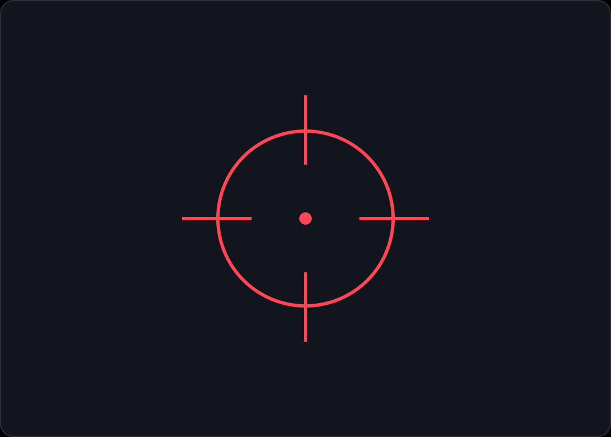

PROJETO INDIVIDUAL - Luis Otavio
Esse é o meu projeto individual sobre os jogos que fizeram parte da minha vida. Aqui você vê a minha história com eles e minhas estatísticas atuais no Valorant.

AOS 7 ANOS
O primeiro contato com FPS e o início do meu ciclo de amizades.
Ver página do jogo
POR VOLTA DOS 13 ANOS
Estratégia, competição e trabalho em equipe com o mesmo grupo.
Ver página do jogo
18 ANOS
O jogo da fase adulta, ele que mantém o grupo conectado até hoje.
Ver página do jogo